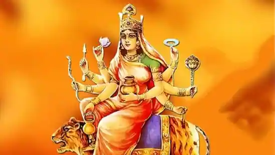

Navratri 2022: From puja vidhi to the special bhog to mantras, here is all that you need to know about Navratri day 4.
Shardiya Navratri 2022 Day 4: Maa Kushmanda significance, puja vidhi, timing(Pinterest)
Navratri-2022 :The festive season is here. The ten-day festival celebrates and worships Goddess Shakti or Goddess Durga. Navratri, literally translating to nine nights, is celebrated across the country. The nine days are dedicated to the nine avatars of Goddess Shakti - Maa Shailputri, Maa Brahmcharini, Maa Chandraghanta, Maa Kushmanda, Maa Skandmata, Maa Katyayani, Maa Kaalratri, Maa Mahagauri and Maa Siddhidatri. Each day of the festival is dedicated to each avatar. The festival started this year on September 26 and will go on till October 5. The first day of Navratri was dedicated to Maa Shailputri, while the second day was dedicated to Maa Brahmacharini. On the third day of Navratri, Maa Chandraghanta was worshipped. On the fourth day of the festival, Maa Kushmanda will be celebrated.While festival food, spending time with loved ones, and all the festive vibes lift everyone's spirit, there is another crucial aspect of the festival that makes us exuberant and that is decking up or getting ready for the festival. People take out the best of their fineries during Navratri and Durga Puja, apply makeup and look forward to put their best sartorial foot forward. Experts say that looking food or beauty is actually closely related to mental health.